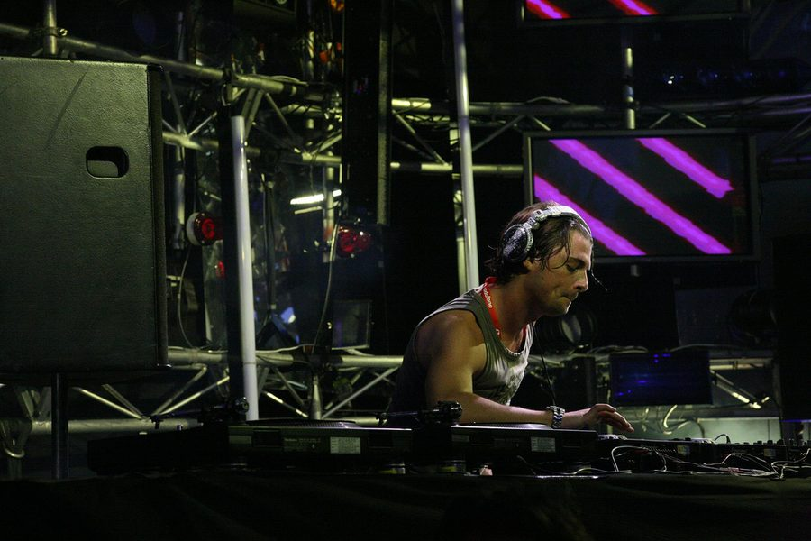

Axwell stationing in Australia over summer!



Elite Swedish house DJ/producer Axwell was one of the big-ticket acts on the Stereosonic lineup when it was announced in August, for what will be his first Australian tour in nearly two years, and it’s just come to light his visit will be even more special than we expected. He’ll be basing himself in Australia for two months during our summer!
A sleuthy ITMer (thanks THE BEAT!) led us to the revelation on Axwell’s forum where he dropped the information recently, when he was responding to excitement over his pending visit for Stereosonic. “I’m so excited for Stereosonic, I’m gonna base myself at Bondi Beach for 2 months this to really do Aussie!!!”, he wrote in endearing broken English. Aussie really wants to do you too, Axwell!
It was only just yesterday that Axwell was pointed to in ITM’s summer hitlist and predictions! as an act that we hoped would be playing at Sensation on New Years Eve. It’s already been confirmed that fellow Swede Sebastian Ingrosso will be playing at ‘Ocean of White’, and ID&T’s Irfan van Ewijk had hinted he may be bringing a few “friends” along for the ride. It’s now looking a lot more likely that Axwell will be joining Sebastian on stage on New Years Eve…
Stay tuned to ITM for more details on Axwell’s Australian summer soujourn!